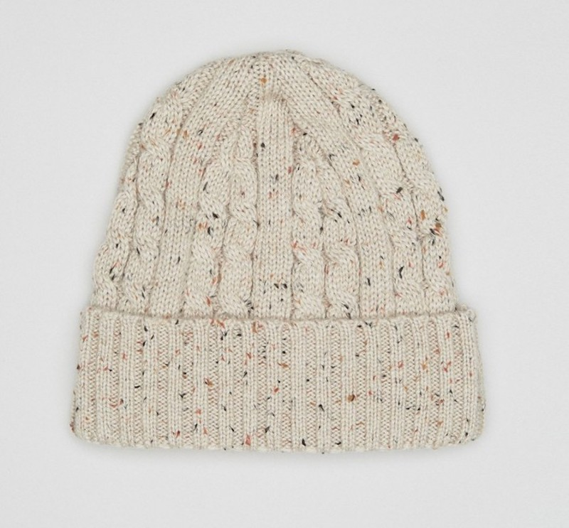
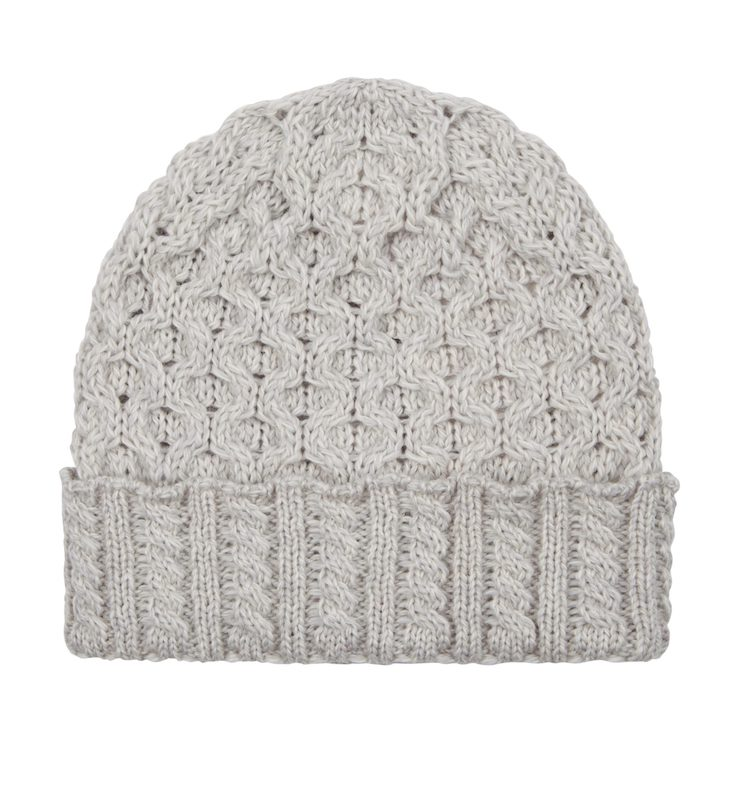
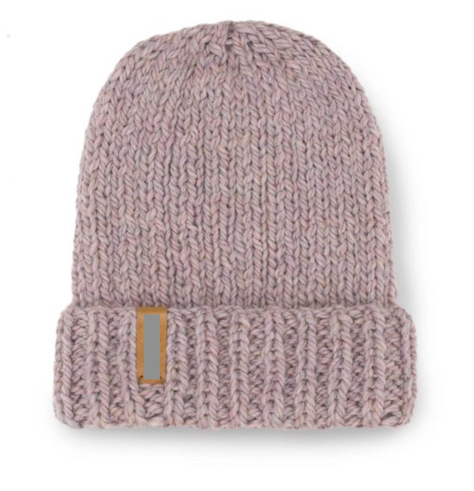
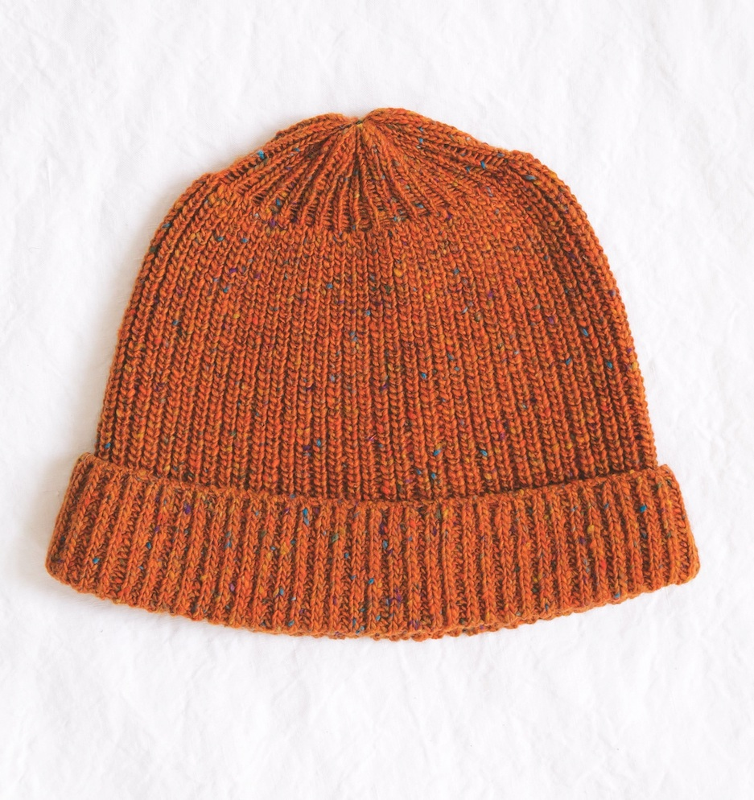
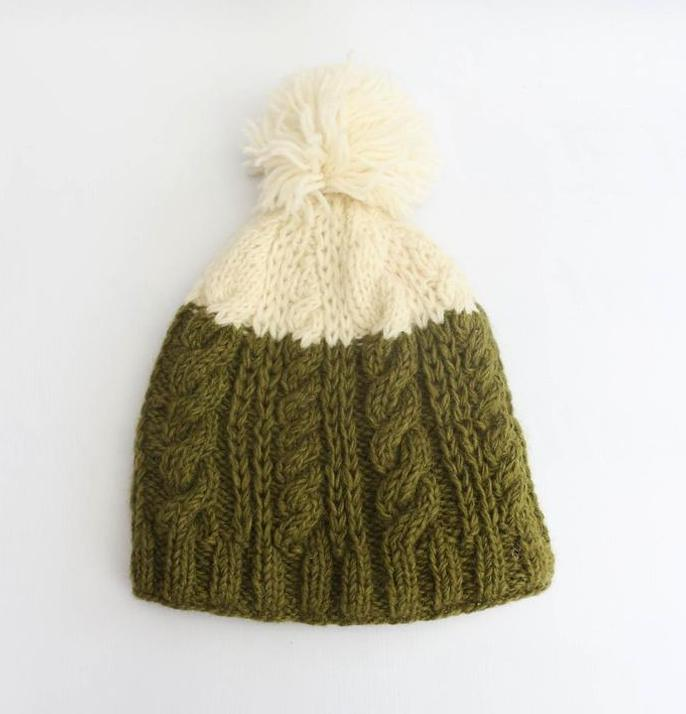

- × 
-
Stylish hand-knitted hats that will keep you warm throughout the seasons. They are knit with traditional Aran stitching to add a touch of Irish heritage. Rib-knit cuffs seal in warmth and provide a great fit. The wool came directly from our Woollen Mill farm where all animals are treated with respect and love. These classic, cozy and luxurious hats are the perfect addition to your wardrobe. €16
- They are knit with traditional Aran stitching to add a touch of Irish heritage. Rib-knit cuffs seal in warmth and provide a great fit. The wool came directly from our Woollen Mill farm where all animals are treated with respect and love. These classic, cozy and luxurious hats are the perfect addition to your wardrobe. €16" style="width:100px;" onclick="imgFunction(this);">
- The beauty of handwork is in its slight variations in size, color and design contribute to making each piece unique. The wool came directly from our Woollen Mill farm where all animals are treated with respect and love. These classic, cozy and luxurious hats are the perfect addition to your wardrobe. €19" style="width:100px;" onclick="imgFunction(this);">
-  Perfect with the flexibility of the regular hats and warmth of the hats. The beauty of handwork is in its slight variations in size, color and design contribute to making each piece unique. The wool came directly from our Woollen Mill farm where all animals are treated with respect and love. These classic, cozy and luxurious hats are the perfect addition to your wardrobe. €14" style="width:100px;" onclick="imgFunction(this);">
-  The beauty of handwork is in its slight variations in size, color and design contribute to making each piece unique. The wool came directly from our Woollen Mill farm where all animals are treated with respect and love. These classic, cozy and luxurious hats are the perfect addition to your wardrobe. €19" style="width:100px;" onclick="imgFunction(this);">
- The beauty of handwork is in its slight variations in size, color and design contribute to making each piece unique. The wool came directly from our Woollen Mill farm where all animals are treated with respect and love. These classic, cozy and luxurious hats are the perfect addition to your wardrobe. €17" style="width:100px;" onclick="imgFunction(this);">